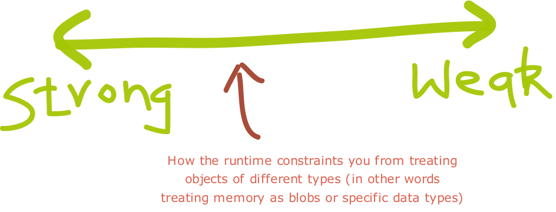
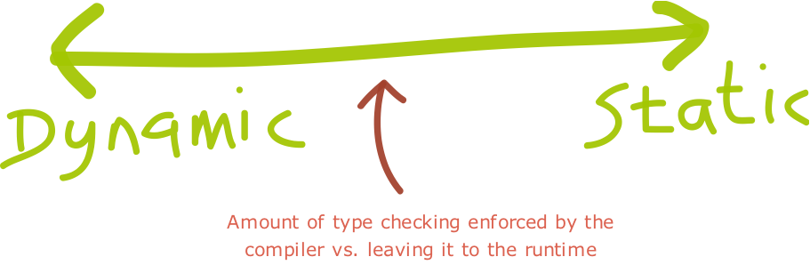
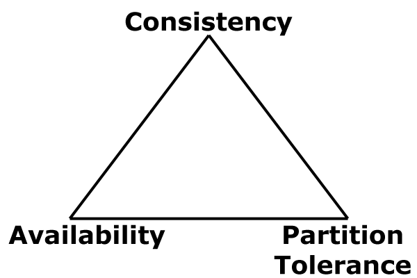
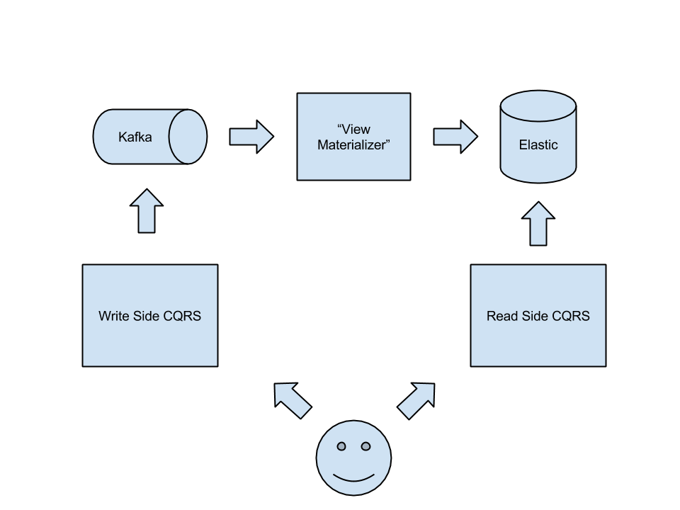

Groovy and Scala
Friends or Foes?
Marco Vermeulen
Here be Dragons...
...and where you have dragons,
you have flames!
but why do we fight??
we build walls
it's all subjective
time to start building bridges!
About the Talk
- Type Systems
- Dynamically Typed Languages
- Statically Typed Languages
- Groovy and Scala
- Scala Features
- Demo
- Q&A / Discussion
Links
About Me
Marco Vermeulen
- Software Developer
- Love Groovy, Scala and Java
- Work as Consultant in London Area
- Currently with Crowdmix
- Creator of GVM
- Wired for Code
- Twitter: @marc0der
Type Systems
Strongly Typed Languages
“whenever an object is passed from a calling function to a called function, its type must be compatible with the type declared in the called function.”
Type Checking Concepts
Strength
Type Checking Concepts
Dynamism
Statically Typed Languages
Declared values bound to a type and optionally an object.
Java
BigDecimal balance = new BigDecimal("39.42");
Scala
val balance: BigDecimal = 39.42
Dynamically Typed Languages
Declared values have no type until interpreted at runtime.
Python
message = 12345
print(message)
message = 'And now for something completely different.'
print(message)
Javascript
var total = 5;
total = 'x';
Dynamic Languages
Dynamic Languages
“Dynamic programming language is a term used in computer science to describe a class of high-level programming languages which, at runtime, execute many common programming behaviors that static programming languages perform during compilation.”
Dynamic Languages
Pros
- Usually more concise
- No upfront compilation
- Faster turnaround
- Monkey patching
- Duck typing
- Stronger focus on TDD
- Inspires pragmatism
Dynamic Languages
Cons
- Runtime bugs
- Less performant
- Refactoring difficult
Statically Typed Languages
Statically Typed Languages
Pros
- Earlier detection of type errors
- Self documenting code
- Compiler optimisations
- Improved runtime efficiency
- Improved IDE support
Statically Typed Languages
Cons
- More verbose
- Slower development process
- Dilutes TDD
Groovy and Scala


where do they fit in?
Groovy
Groovy
- JVM Platform Language
- Object Oriented
- Imperative
- also Functional?
- Optionally Typed
- Scripting
- Java interoperability
- Compiled, not interpreted
- Runtime Metaprogramming
- Can compile statically
- Groovy Console
- A swiss army knife for any application!
Scala
Scala
- JVM Platform Language
- Functional
- Object Oriented
- Strong Static Type System
- Behaves like dynamic language
- Terse like dynamic language
- Compiled
- REPL
- Cool language features!
Scala
some drawbacks
- slow compilation: type inference and implicits
- endless scrutenisation over code
- horrendous tooling support in IDEA
- highly functional code can be difficult to Unit Test
- very difficult to Debug in an IDE
- SBT. Worst. Build. Tool. Ever.
Codez!
The core of a CQRS Event Sourced app
CAP Theorem

CQRS
- Command Query Responsibility Segregation
- Separate Write & Read Apps
Event Sourcing
- Supplements CQRS
- Event driven
- Expensive processing offlined
- Eventually consistency
Picture like a 1000 words...

Summary
- Compliments Groovy, does not Replace it
- Scala is an Allie, not an Enemy
- Academic community, but doesn't bite!
- Improves your Groovy code
- Be a Peacemaker, not a War Monger
- Have a lot of fun!